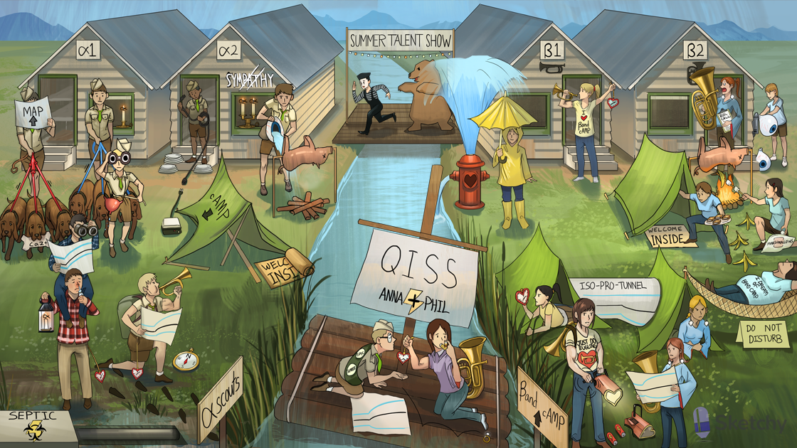

Sympathetic mime: sympathomimetic
[Exit, pursued by a bear]
“ROL” call sheet: beta-2 agonists used for bronchodilation have -”rol” suffix (albuterol, formoterol, salmeterol)
Norepinephrine increases PULSE PRESSURE, difference between systolic and diastolic (beta-1 increase in contractility)
QISS: alpha-1, alpha-2, beta-1, beta-2 receptors are coupled to Gq, Gi, Gs, Gs respectively
Alpha scouts: alpha receptor agonists
Single lit alpha candle: alpha-1 agonist
3 “dags”: alpha-1 receptor coupled to Gq → IP3-DAG cascade
“Dag” with bone: IP3-DAG cascade→ increased intracellular calcium (smooth muscle cell)
Alpha-1 scout pulling red leashes: alpha-1 activation increases peripheral arterial resistance (vasoconstriction at small arteries, arterioles, precapillary sphincters)
Alpha-1 scout elevating MAP: alpha-1 activation increases mean arterial pressure (MAP)
Alpha-1 scout pulling blue leashes: alpha-1 activation increases venous return (venoconstriction)
Alpha-1 scout binoculars: alpha-1 activation at pupillary dilator muscle causes mydriasis (pupillary dilation)
Alpha-1 scout pulling drawstring: alpha-1 activation causes urethral sphincter and prostatic smooth muscle contraction
Full bladder canteen: alpha-1 activation causes urinary retention
Two lit alpha candles: alpha-2 agonist
“No sympathy”: alpha-2 agonists are sympatholytics (act centrally to decrease sympathetic tone)
Packed up alpha-2 camp tent: alpha-2 receptor coupled to Gi → decreased cAMP
Alpha-2 scout packing up presynaptic wire: presynaptic alpha-2 receptors cause inhibition of neurotransmitter release
Welcome INSIDE mat: insulin
Rolled up welcome INSIDE mat: alpha-2 activation at pancreatic islet cells decreases insulin release
Alpha-2 scout dousing roasting pig: alpha-2 activation inhibits lipolysis and release of fatty acids
Alpha-2 scout emptying water from eyeball hat: activation of alpha-2 at ciliary body decreases aqueous humor production
Brim of eyeball hat: brimonidine is an alpha-2 agonist used to treat chronic open angle glaucoma (decreases aqueous humor production)
βand cAMP: beta receptor agonists increase cyclic AMP (cAMP)
Beta-1 bugle: beta-1 agonist
“I ♥ βand cAMP”: beta-1 receptors are found on cardiac myocytes (including SA and AV nodes)
“I ♥ βand cAMP”: beta-1 activation causes increased cyclic AMP → increased intracellular calcium
Elevated heart clock: beta-1 activation increases heart rate (SA node)
Buff contracted bicep: beta-1 activation increases cardiac contractility
Heart hydrant: beta-1 activation results in increased cardiac output
Open rain umbrella: beta-1 activation increases renin release (JGA cells)
Beta-2 tuba: beta-2 activity
Beta-2 camper taking big breath: beta-2 activation leads to bronchoDILATION (increased cyclic AMP → activates PKA)
Beta-2 camper with dilated sleeves: beta-2 activation causes coronary and skeletal muscle vasoDILATION → decreases systemic vascular resistance (SVR)
Beta-2 camper roasting pig: beta-2 activation stimulates lipolysis and release of free fatty acids
Beta-2 camper producing marshmallows from liver-shaped bag: beta-2 receptor activation at the liver promotes gluconeogenesis
Beta-2 camper carrying s’mores INSIDE tent: beta-2 activation at pancreatic islet cells stimulates insulin release→ moves glucose into cells
Banana peels: beta-2 activation can cause hypokalemia (due to increased insulin activity)
Beta-2 camper filling eyeball balloon: beta-2 activation at ciliary body increases aqueous humor production
Flannel friends: phenylephrine (alpha-1 agonist)
Flannel friend holding single alpha candle: phenylephrine is an alpha-1 agonist
Flannel friend’s nasal spray: phenylephrine treats nasal congestion (alpha-1 mediated vasoconstriction)
Flannel friend’s binoculars: phenylephrine causes mydriasis (activates alpha-1 at pupillary dilator muscle)
Phenylephrine increases MAP (alpha-1 increase in SVR)
Phenylephrine increases systolic pressure (alpha-1 arteriolar constriction)
Phenylephrine increases diastolic pressure (alpha-1 venous constriction)
Flannel friend’s low dangling heart watch: phenylephrine causes reflex bradycardia (response to alpha-1 increase in MAP)
North compass: NORepinephrine (alpha>beta1 agonist)
North scout blowing beta-1 bugle: norepinephrine has some beta-1 activity (primarily an ALPHA AGONIST)
Norepinephrine increases MAP (alpha-1 increase in SVR)
Norepinephrine increases systolic pressure (alpha-1 arteriolar constriction)
Norepinephrine increases diastolic pressure (alpha-1 venous constriction)
North scout’s low dangling heart watch: norepinephrine causes reflex bradycardia (response to alpha-1 increase in MAP)
North scout’s buff contracted bicep: norepinephrine increases cardiac contractility (activates beta-1)
Septic tank: septic shock (phenylephrine and norepinephrine increase SVR and venous return to treat distributive/hypovolemic shock)
“Just DO BUgling”: DOBUtamine (beta-1>beta-2 agonist)
Beta-1 bugle: dobutamine is primarily a beta-1 agonist
“Just DO BUgling” winding up heart flashlight: dobutamine increases heart rate, contractility, and cardiac output (beta-1 effects)
“Just DO BUgling” friend’s beta-2 tuba: dobutamine has some beta-2 activity (primarily a BETA-1 AGONIST)
“Just DO BUgling” friend’s dilated sleeves: dobutamine causes vasodilation → decreases SVR (effects mild due to minimal beta-2 activity)
Dobutamine increases PULSE PRESSURE, difference between systolic and diastolic (beta-1 increase in contractility)
Dobutamine increases systolic pressure (beta-1 increase in CO)
Dobutamine can decrease diastolic pressure (beta-2 arteriolar dilation)
Batteries fallen out of heart flashlight: dobutamine can be used in cardiogenic shock
Dead heart batteries: cardiogenic shock (dobutamine increases contractility and CO to treat cardiogenic shock)
“Iso-pro-tunnel” between beta-1 and beta-2 camps: isoproterenol (beta-1=beta-2
agonist)
Tunnel camper’s elevated heart watch and contracted bicep: isoproterenol increases heart rate and contractility (beta-1 effects)
Tunnel camper’s dilated sleeves: isoproterenol causes vasodilation → decreases SVR (beta-2 effects)
Tunnel camper’s dangling DIAmond earrings: isoproterenol decreases DIAstolic pressure (beta-2 vasodilation and decreased SVR)
Isoproterenol increases PULSE PRESSURE, difference between systolic and diastolic (beta-1 increase in contractility)
Isoproterenol decreases MAP (beta-2 decrease in SVR)
Isoproterenol decreases diastolic pressure (beta-2 arteriolar dilation)
dangling DIAmond earrings: decreased DIAstolic pressure (beta-2 vasodilation and decreased SVR)
dangling DIAmond earrings: decreased DIAstolic pressure (beta-2 vasodilation and decreased SVR)
Sleeping beta-2 camp counselor: beta-2 agonists relax uterine smooth muscle
“Do not disTURB”: TERButaline prevents premature labor (beta-2 relaxes the uterus)
“I DREAM of band camp”: ritoDRINE prevents premature labor (beta-2 relaxes the uterus)
EPIC kiss between alpha and beta camps: EPInephrine (beta>alpha agonist)
Low side of EPIC raft: at LOW doses, epinephrine’s BETA AGONIST effects predominate
Beta-2 tuba girl’s EPIC inhaler: epinephrine causes bronchodilation (beta-2 effects)
EPIC DIAmond falling off LOW side of raft: at LOW doses, epinephrine decreases DIAstolic pressure (beta-2 vasodilation and decreased SVR)
EPIC elevated heart watch and buff contracted bicep: epinephrine increased heart rate and cardiac contractility (beta-1 effects)
High side of epic raft: at HIGH doses, epinephrine’s ALPHA AGONIST effects predominate
Epinephrine increases MAP (alpha-1 increase in SVR)
Epinephrine increases systolic pressure (alpha-1 arteriolar constriction)
Epinephrine can decrease diastolic pressure (beta-2 arteriolar dilation)
Epinephrine increases PULSE PRESSURE, difference between systolic and diastolic (beta-1 increase in contractility)
“Anna + Phil”: anaphylactic shock (epinephrine increases SVR and bronchodilates to treat anaphylactic shock)